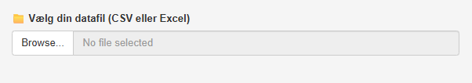
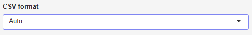
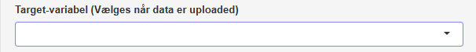
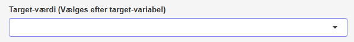
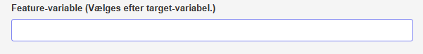
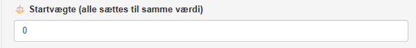
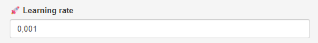
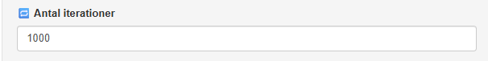
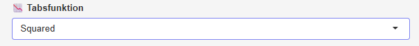
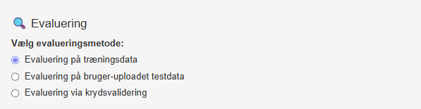

Hjælp til app: Kunstig neuron
Herunder gives en gennemgang af hver af fanerne i Kunstig Neuron App. Du kan læse mere om matematikken bag i noten om kunstige neuroner.

Tryk på Browse… og vælg den datafil, du vil uploade. Det skal enten være en csv- eller excel-fil.
Hvis du uploader en fil i CSV format, kommer følgende frem:

Her skal du vælge, hvordan data er separeret. Der er følgende muligheder:
- Auto
- Komma (,)
- Semikolon (; - Dansk/Excel)
Ved "Auto" prøver app’en selv at finde ud af, hvordan data er separeret. Hvis du ikke ved, hvad du skal vælge, så prøv alle muligheder og se efter, hvordan data bliver indlæst i højre side af skærmen.
Tryk herefter på Næste-knappen.
Target-variabel

Under Target-variabel vælger du den kolonne i dit datasæt, som angiver den klasse, der skal prædikteres. Du skal altså her vælge den kolonne, hvor target-værdierne står.
Target-værdi

Under target-værdi vælger du den specifikke værdi, som skal svare til en target-værdi på \(1\). Hvis du for eksempel har en kolonne, hvor værdierne er \(A\), \(B\) og \(C\), og du vælger \(B\) som target-værdi, så laves der automatisk en target-variabel, hvor
\[ t = \begin{cases} 1 & \textrm{hvis target-variablen har værdien } B \\ 0 & \textrm{hvis target-variablen har værdien } A \textrm{ eller } C \end{cases} \]
Feature-variable

Under feature-variable vælges alle de feature-/input-variable, som skal være en del af modellen.
Tryk herefter på Næste-knappen.
Startvægte

AI modellen trænes ved at finde minimum for en tabsfunktion, som gøres ved hjælp af gradientnedstigning (som også er forklaret i denne video).
Under Startvægte er det muligt at vælge hvilke værdier af vægtene, gradientnedstigning skal tage sit udgangspunkt i. Bemærk, at alle vægte starter i den samme værdi.
Learning rate

Når vægtene opdateres ved hjælp af gradientnedstigning benyttes denne opdateringsregel (hvor \(E\) er tabsfunktionen)
\[ w^{(\textrm{ny})} \leftarrow w - \eta \cdot \frac{\partial E }{\partial w} \]
her er \(\eta\) det, som kaldes for en learning rate. Hvis \(\eta\) vælges for stor, kan man risikere at "træde henover" minimum (det ses typisk ved at grafen for tabsfunktionen som funktion af antal iterationer – til højre i skærmbilledet – fluktuerer eller "stikker af"). Vælges \(\eta\) for lille går opdateringen for langsom, som ses ved at værdien af tabsfunktionen næsten ikke ændrer sig.
Iterationer

Iterationer angiver det antal gange vægtene opdateres i forbindelse med gradientnedstigning. Antal iterationer skal sættes stort nok til, at grafen for tabsfunktionen som funktion af antal iterationer begynder at flade ud.
Tabsfunktion

Her kan vælges den tabsfunktion, som minimeres. Squared svarer til squared error tabsfunktionen, som måler summen af de kvadrerede fejl:
\[ \begin{aligned} E(w_0, w_1, &\dots, w_n) = \frac{1}{2} \sum_{m=1}^{M} \left (t^{(m)}- o^{(m)} \right)^2, \end{aligned} \]
mens Cross-entropy svarer til cross-entropy tabsfunktionen:
\[ \begin{aligned} E(w_0, w_1, \dots, & w_n) = \\ &- \sum_{m=1}^{M} \left (t^{(m)} \cdot \ln(o^{(m)}) + (1-t^{(m)}) \cdot \ln(1-o^{(m)}) \right) \end{aligned} \]
I forbindelse med binær klassifikation kan squared error have problemer med slow learning som ikke på samme måde ses, hvis cross-entropy i stedet vælges.
Uanset hvilken tabsfunktion man vælger, skal man være opmærksom på, om gradientnedstigning konvergerer. Det ses ved, at grafen for tabsfunktionen i højre side af skærmen flader ud.
Tryk herefter på Træn model-knappen.
Output fra modellen
Når modellen er trænet ses outputtet i højre side af skærmen. Følgende vises:
Grafen for værdien af tabsfunktionen som funktion af antal iterationer. Her skal du holde øje med, at grafen flader ud svarende til, at gradientnedstigning er konvergeret.
Slutværdien af tabsfunktionen. Hvis du vil vide mere om, hvordan størrelsen af denne værdi kan vurderes, så se dette forløb.
En tabel med de vægte, som er estimeret ved hjælp af gradientnedstigning.
Evaluering

Der kan her vælges mellem tre evalueringsmetoder:
- Evaluering på træningsdata
- Evaluering på bruger-uploadet testdata
- Evaluering via krydsvalidering
Når evalueringsmetoden er valgt, trykkes der på Kør evaluering-knappen.
Vælges Evaluering på træningsdata beregnes følgende: Klassifikationsnøjagtighed (CA) og en confusion matrix. Desuden vises targetfordelingen i træningsdatasættet. Her skal man være opmærksom på at sammenholde CA med denne fordeling, som det også er beskrevet i afsnittet Klassifikationsnøjagtighed (CA).
Endelig er det muligt at downloade et datasæt, hvor træningsdatasættet er udvidet med to ekstra kolonner: en kolonne med den prædikterede sandsynlighed (outputværdien \(o\)) for hvert træningseksempel og en kolonne med den deraf følgende prædiktion (hvis \(o \geq 0.5\) prædikteres det, at targetværdien er \(1\) og \(0\) ellers).
Vælges Evaluering på bruger-uploadet testdata beregnes det samme som for Evaluering på træningsdata blot med udgangspunkt i et uploadet testdatasæt.
Endelig kan Evaluering via krydsvalidering vælges. Her beregnes Klassifikationsnøjagtighed (CA) og en confusion matrix baseret på krydsvalidering.